Chapter 3 Point Pattern Analysis
In this script, we will explore point pattern analysis (ppa) in R.
The most common package for ppa in R is spatstat (Baddeley and Turner 2005). Other introductions to ppa and spatstat in specific are Chapter 4 in Fletcher and Fortin (2018), Chapter 11 in Pebesma and Bivand (2022), Baddeley and Turner (2005), and Baddeley, Rubak, and Turner (2015).
There are some less common package that we will not delve into here but which I do want to mention as they might be helpful to you at some future point: ads (Pélissier and Goreaud 2015), ecespa (Cruz Rot 2008), splancs (Rowlingson and Diggle 2022), and stpp (Gabriel et al. 2022).
3.1 the ppp class
spatstat introduced its own object class to R, the ppp class.
Most functions we will work with in the following script only work with this object class.
To illustrate the package we will use the a data set of bird occurrences in Germany we already used in the first chapter, the Database of Global Administrative Areas (GADM) which we also already used in the first lecture and a DEM of Rhineland Palatinate ( download here).
library(pacman)
p_load(sf, spatstat, mapview, dplyr, ggplot2, magrittr, terra, raster, maptools, data.table)## Reading layer `gadm36_DEU_3_pk' from data source `C:\Users\jonat\Documents\001_Uni\002_teaching\online books\book_spatial_data_science_in_R\data\gadm36_DEU_3_pk.gpkg' using driver `GPKG'
## Simple feature collection with 4680 features and 16 fields
## Geometry type: MULTIPOLYGON
## Dimension: XY
## Bounding box: xmin: 5.866251 ymin: 47.27012 xmax: 15.04181 ymax: 55.05653
## Geodetic CRS: WGS 84We will need to prepare the bird data before we can start with the analyses. First, we remove all entries with missing coordinates.
Then we remove duplicate observations, so that there is only one observation per location.
This is easiest with the unique() function from the data.table package (Dowle and Srinivasan 2021).
While base R also has a unique() function, the base R version only works with vectors.
It returns all unique values of a vector.
The data.table version works with data frames and returns only rows with unique values in the selected columns.
The columns are selected with the by argument.
We choose the columns that hold the coordinates decimalLatitude and decimalLongitude.
Now we can turn the data frame into an sf object.
Lastly, we subset the data to only observations within Rhineland Palatinate.
Let’s have a look.
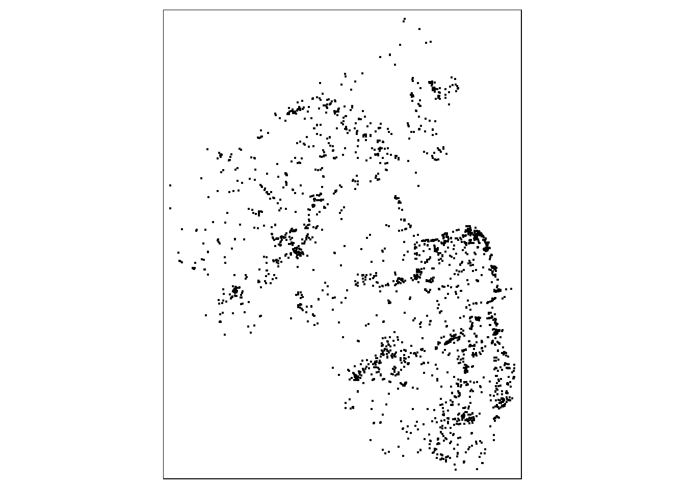
These bird observations are our starting point for the ppa.
We can use the as.ppp() function to convert the sf object into a ppp.
There is one caveat however: the data need to be in a projected coordinate system.
Otherwise as.ppp() will return an error.
Currently, our data are in a geographic coordinate system (latitude and longitude) so we need to transform them first.
I choose ETRS89 / UTM zone 32N (N-E) (EPSG 3044) because that is the CRS of the DEM we will use later.
We will not cover marked point patterns in this tutorial. Therefore, we need to remove all variables except for the geometry.
Now we can create the ppp.
## Planar point pattern: 9547 points
## window: rectangle = [300361, 463668.4] x [5426570, 5641700] unitsWe see that we have a planar (i.e. 2 dimensional) point pattern with 9547 point which is equal to the number of rows in birds2.
Besides the points, the ppp object also contains the window, the rectangle in that includes all points.
We can plot the ppp using the base plot function.
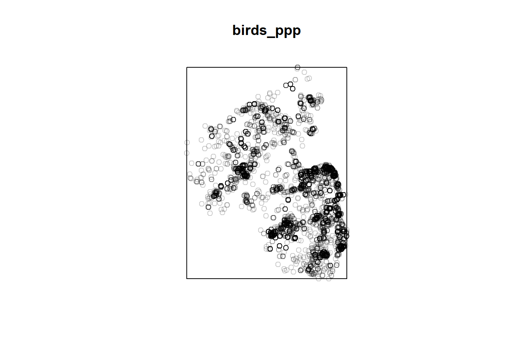
The window can be queried separately through the Window() function.
The resulting object has the class owin (observation window).
## [1] "owin"3.2 First order processes
The most basic first order property is the density, the number of points in an area.
We can use the quadratcount() function to separate our window in quadrants and count the points in each.
The number of quadrant rows and columns is determined through the arguments nx and ny.
First, we compute the global density so just a single quadrant, hence both nx and ny are one.
Q0 <- quadratcount(birds_ppp, nx= 1, ny=1)
plot(birds_ppp, pch=20, cols="grey70", main=NULL)
plot(Q0, add=TRUE) 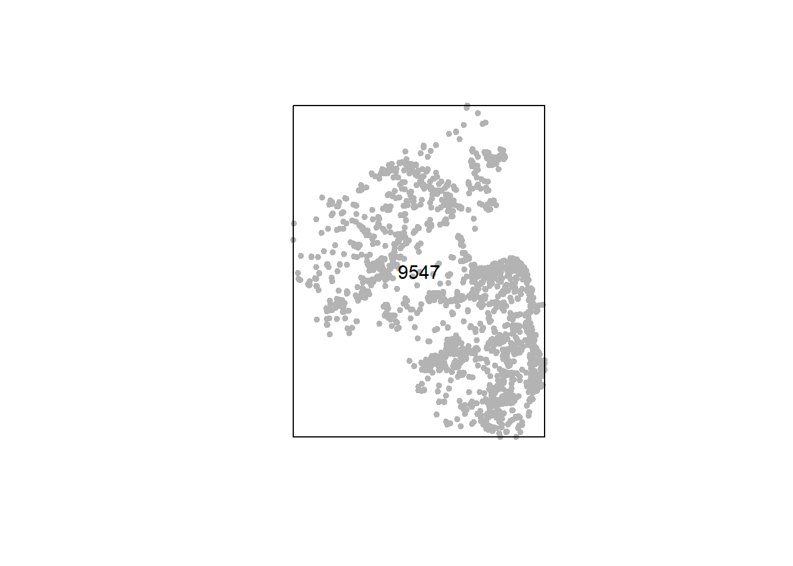
For the plot I have adjusted the symbol (pch), point color (cols) and plot title (main).
We first plot the points (birds_ppp) and then add the quardrants (or just quadrant in this case) with Q0.
Notice the add=TRUE this adds the elements from Q0 to the plot of birds_ppp instead of creating a new plot.
By varying the number of quadrants we can alter the number of local densities we compute.
Q1 <- quadratcount(birds_ppp, nx= 2, ny=2)
Q2 <- quadratcount(birds_ppp, nx= 3, ny=6)
Q3 <- quadratcount(birds_ppp, nx= 10, ny=20)
plot(birds_ppp, pch=20, cols="grey70", main = NULL)
plot(Q1, add=TRUE) 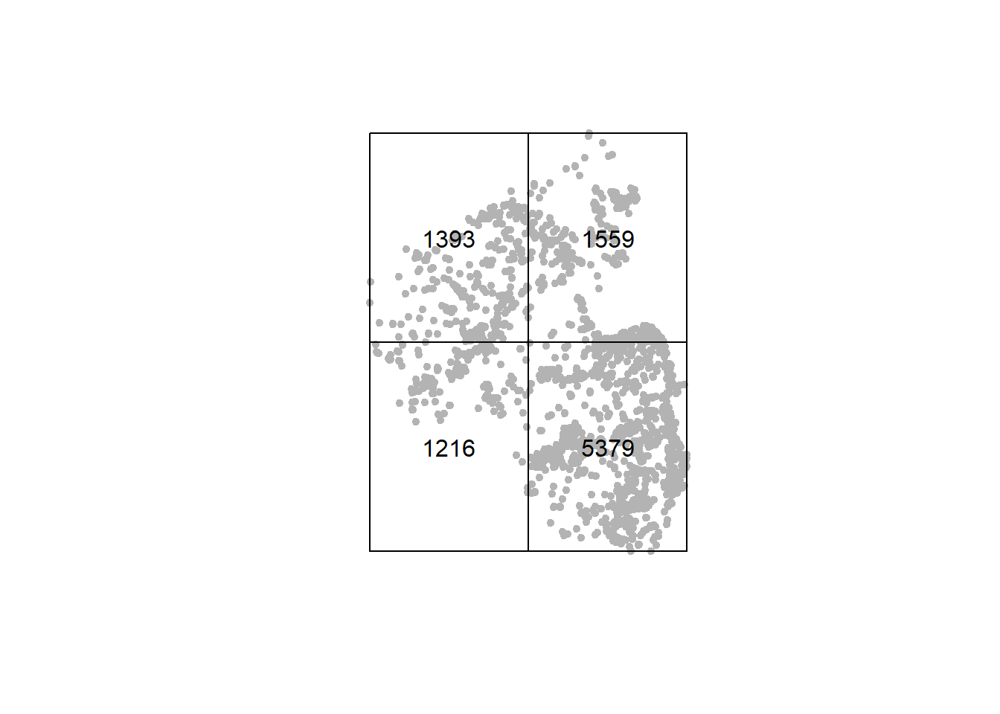
Exercise
- use data(“bei”) to load a second point pattern.
- use ?bei to learn more about the data
- compute the density of bei in a 5X6 grid
The intensity is the density per area and can be computed by intensity().
Q0.d <- intensity(Q0, image = T)
Q1.d <- intensity(Q1, image = T)
Q2.d <- intensity(Q2, image = T)
Q3.d <- intensity(Q3, image = T)The unit - points per square meter - is not very intuitive.
We can change it to points per square kilometer with the rescale() function.
Now we get the same results but in the new and much more intuitive units.
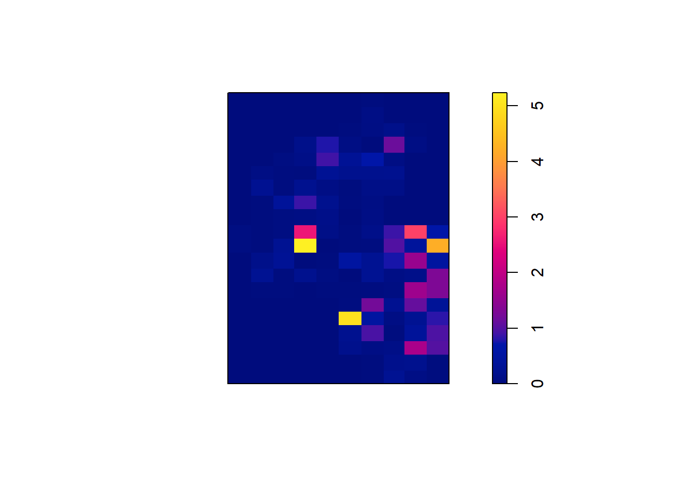
We can also use predefined areas to compute density and intensity.
We will go through two different approaches here.
The first is based on a categorized raster and the second on a polygon layer.
The categorized raster is the DEM of Rhineland Palatinate we loaded in the beginning.
As the raster is quite large we will aggregate cells to increase cell sizes and decrease the resolution.
We loaded the raster with the rast() function from the terra package (Hijmans 2022b).
terra is the leading package for working with raster data in R at the moment (see here for an introduction) .
It supersedes the raster package (Hijmans 2022a) which was the standard package before.
Each of the two packages has its own object class to store the raster internally.
The raster package uses the class RasterLayer and the terra package uses the class SpatRaster.
Some packages have not adjusted to the switch to terra yet and still require RasterLayer objects.
This is also the case for spatstat, which in turn again uses its own raster object class im.
Thus, we need to transform the SpatRaster to a RasterLayer which can be done with the function raster() and transform the RasterLayerto an im with as.im(). Please note that the maptools package needs to be loaded for the as.im() function to work with raster objects.
## |---------|---------|---------|---------|========================================= DEM4 is still a continuous raster where each cell stores an elevation value.
Now we will create a categorical raster which stores elevation classes instead of elevation values.
First, we need to define the breaks, i.e., which elevation values correspond to which classes.
As we have no a priori classification in mind here we will use the quartiles of the elevation values.
## DTM Germany_Rheinland-Pfalz 20m
## Min. : 27.7
## 1st Qu.:223.1
## Median :318.2
## Mean :318.1
## 3rd Qu.:415.0
## Max. :815.9
## NA's :2787887With the cut() function we assign the cells of DEM4 to four classes labeld 1 to 4 according to the breaks defined in breaks.
Afterwards we need to transform this to another object class one more time with tess().
elev_class <- cut(DEM4, breaks = breaks, labels = 1:4)
elev_class <- tess(image = elev_class)
plot(elev_class)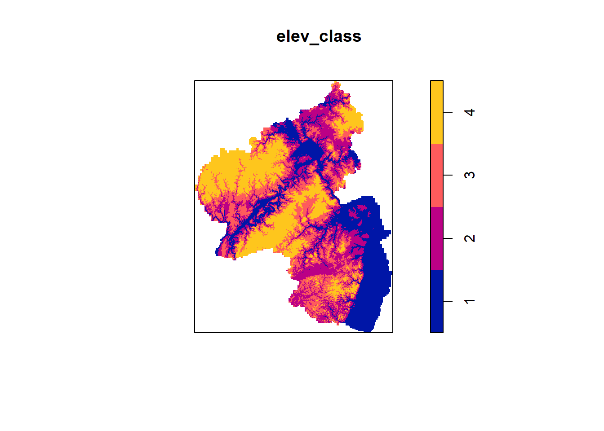
Now we can use the classified elevation raster as quadrants for the quadratcount() function.

Based on this we can already see, that the number of observations tends to decrease along the elevation classes.
Exercise
- the elevation data for the point pattern is available under bei.extra$elev
- it already is an im object.
- create four elevation classes
- compute and plot the intensity in each class
As a second example, we will use sf polygons to define quadrants.
Here we will do so with the districts within Rhineland Palatinate.
In the end, we still need to provide quadratcount()with an object of class tess.
This can be created with
# subset all of Germany to just RLP
rlp <- filter(gadm, NAME_1 == "Rheinland-Pfalz")
# assign new CRS that conforms the to CRS of birds
rlp <- st_transform(rlp, 3044)
# Aggregate smaller district units to NAME_2 level
rlp %<>%
group_by(NAME_2) %>%
summarise(geom = st_union(geom))
# sf polygons can be transformed to owin objects with as.owin().
# We create a list where each object is one entry is one district as owin.
rlp_list <- list()
for(i in 1:nrow(rlp)){
rlp_list[[i]] <- as.owin(rlp[i, ])
}
# convert owin to tess
rlp_owin <- as.tess(rlp_list)
Q <- quadratcount(birds_ppp, tess = rlp_owin)
cl <- interp.colours(c("lightyellow", "orange" ,"red"), length(rlp_list))
plot(Q, col = cl)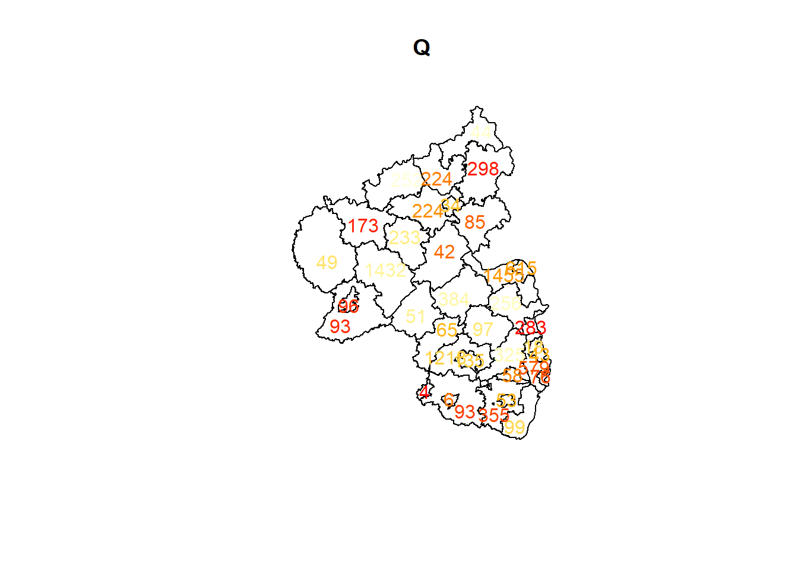
3.2.1 Kernel density
We can create continuous density surfaces with kernel density estimation. The image below is similar to the intensity plots above but the individuals cells are far smaller. Notice that we have he inconvenient unit of observations per square meter again, thus the small numbers.
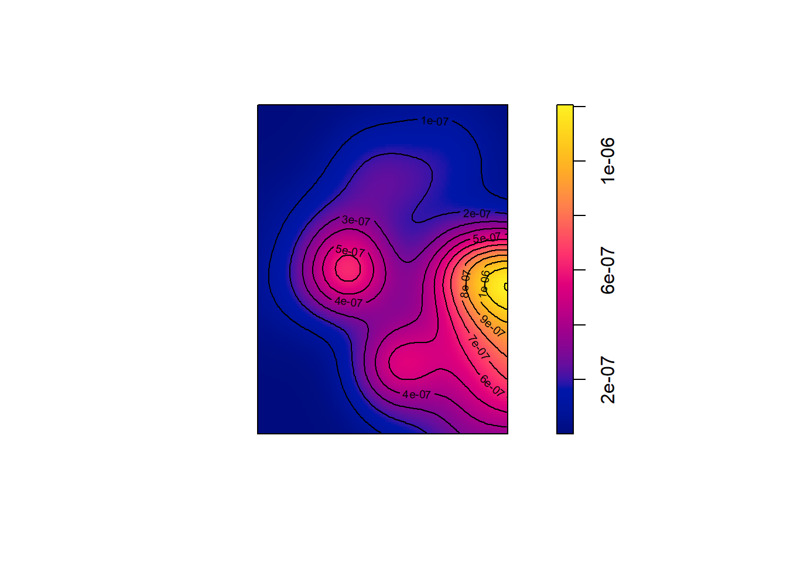
The bandwidth influences how far the influence of a single observation extends.
If we choose a small bandwidth the kernel will only estimate higher densities in direct viccinity of the observations.
If we choose a larger bandwidth the density estimations will increase for more removed parts.
How exactly that works depends on the kernel function.
For the Gaussian Kernel, which is the default setting in density() the function looks like this:
\[G(x, \sigma) = \frac{1}{\sqrt{2\pi\sigma}} exp(-\frac{x^2}{2\sigma^2})\] This is the same formula as for the normal probability distribution, where the bandwidth corresponds to the standard deviation. So you can imagine having a normal distribution centered on every observation. The weight of this observation, how much it adds to the estimated density it of a nearby point decreases with the distance to the observation. The speed with which it decreases corresponds to the standard deviation of my normal distribution and hence to the bandwidth. Hopefully Figure @ref{fig:}
Figure 3.1: Effect of bandwidth in a gaussian Kernel
In R, we can adjust the bandwidth with the sigma argument.
To illustrate the effect of the bandwidth on the density maps, we create six different kernels with increasing bandwidths.
par(mfrow = c(2,3))
for (i in seq(10000, 60000, by = 8433.33)) {
x = density(birds_ppp, sigma = i)
plot(x, main = paste0("bandwidth =", i))
contour(x, add = T)
}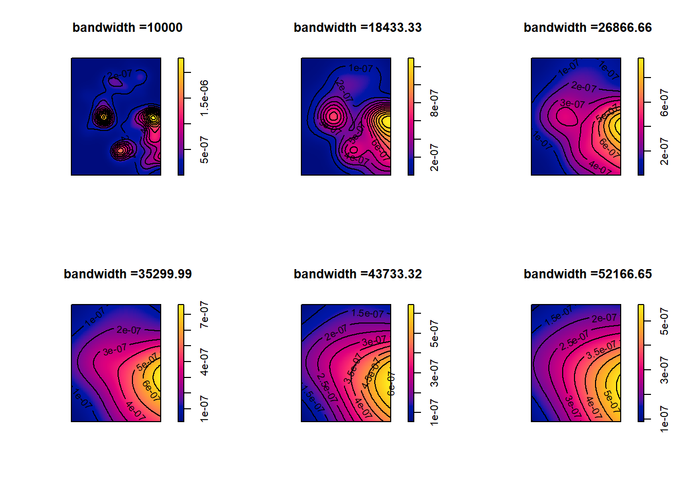
We can also compare different kernel functions in the same way.
For the density() function from the Raster package, there are four different kernel functions available:
1) Gaussian (the default option), 2) Quartic 3) Disc and 4) Epanechnikov.
par(mfrow = c(2,2), mar = c(0,0,0,0))
for (i in c("gaussian", "quartic", "disc", "epanechnikov")) {
x = density(birds_ppp, sigma = 20000, kernel = i)
plot(x, main = paste0("Kernel =", i))
contour(x, add = T)
}Exercise
- try different Kernels with different bandwidths on the
beidata set
- which combination do you think gives a good representation of the data?
Next, we turn to some models that estimate the relationship between the intensity of a point pattern one some other variable.
One such function is the rhohat() function.
The name derived from the greek letter \(\rho\) that is commonly used for intensity and the custom to mark mathematical estimates with a hat.
So \(\hat{\rho}\) is an estimate of \(\rho\).
The rhohat() function fits a non-parametric model to the intensity that does not assume a specific functional form like linear or quadratic.
As arguments it takes the ppp for which we want to model the intensity (object), the variable we want to predict the intensity with (covariate)
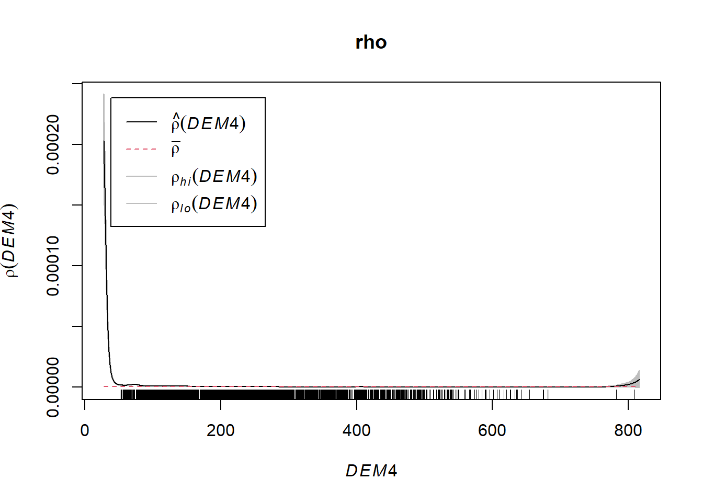
We see four different lines: \(\hat{\rho}\) is the estimated mean intensity as function of the elevation, \(\bar{\rho}\) the overall mean instensity, \(\rho_{hi}\) and \(\rho_{lo}\) are the upper and lower bound of the 95% confidence interval respectively. We can use this model to predict the density for each cell of DEM4.

Again, we see that the intensity is highest in lowland areas and decreases with increasing elevation.
Exercise
- compute rho hat and for the bei data and plot the predicted values
Alternatively, we can use a Poisson point process model (PPM) for prediction. The poission point process follow as functional form. It assumes that the number of points within a given region follow the Poisson distribution. The model is written out as: \[\mathbf{P}(N(B)=n)=\frac{\lambda^{n}(\nu(B))^{n}}{n !} \exp (-\lambda \nu(B))\] Where \(\mathbf{P}(N(B)=n)\) is the probability in the area \(B\) the number of points (\(N(B)\)) equals \(n\). \(\lambda\) is the intensity, the rate parameter of the Poission distribution, and therefore the parameter that is estimated when we fit the model. \(\nu(B)\) is the area of \(B\). When running this command, there may be a warning message. This is not a problem.
## Warning: Values of the covariate 'DEM4' were NA or undefined at 33% (16530 out of 49551) of the quadrature points. Occurred while executing: ppm.ppp(Q = birds_ppp, trend = ~DEM4, data
## = NULL, interaction = NULL)The effectfun() function now calculates the trend in bird intensity with increasing elevation.
Again, we have a mean estimate as a function of the elevation (\(\hat{\lambda}\)), as well as higher and lower bounds of the 95% confidence interval (\(\lambda_{hi}\) and \(\lambda_{lo}\)). The general form is similar to the non-parametric model, but the decline in intensity is slower.
Exercise
- compute the poisson point model for the bei data
- note that the raster needs to be assigned to a new object before
- Do results differ between rhohat and ppm?
Both methods thus come to similar conclusions:
3.3 Second order processes
Now we can turn to the second order processes, i.e., to metrics and functions that consider the location of point with respect to other points.
3.3.1 Average nearest neighbor
For the average nearest neighbor (ANN) method we use the nndist() function.
It calculates the distance from each point to the next closest.
The argument k indicates in which neighbor we are interested.
The nearest neighbor is found with k=1.
With k = 2 we would calculate the distance to the second nearest neighbor.
# - compute nearest neighbor
NN <- nndist(birds_ppp, k = 1)
# - average distance to nearest neighbor over all points
ANN <- mean(NN)
plot(sort(NN), type = "l")
abline(h = ANN, col = "red", lwd = 2)
We can see that most points are close to other ones.
Only a few points are isolated with distances of up to approximately 10 kilometers to the closest observation.
We have 9547 observations and thus there are 9546 (n-1) potential distance classes (i.e., values for k).
This is more than we need here and we will content ourselves with 999 distance classes, to see how distance increases with increasing degrees of neighborhood.
To do so, we call nndist() and provide a vector to the k argument.
The function computes the distance for each observation and each value of k and returns them in a matrix.
Each row is one observation and each column is one value of k.
As we are interested in the mean distance per k value, we summarize this with the apply() function.
apply() takes the matrix we compute with nndist() and applies the function in FUN to each column.
It applies the function to columns because we set the MARGIN to 2.
If we would have set the MARGIN to 1 apply() would have computed row-wise means.
n <- 999
NN <- nndist(birds_ppp, k = 1:n)
ANN <- apply(X = NN, MARGIN = 2, FUN = mean)
plot(ANN ~ eval(1:n), type = "l", main=NULL, las=1, xlab = "k")As would be expected, the distance to the next neighbor increases with k.
There are no noticeable changes in the slop of the line. Hence there are no groups that are closely connected within and distanced between points.
Exercise
compute and visualize average nearest neighbor distances for k 1 to 300 for the bei data
3.3.2 The K-Funktion
Next we will use the K,L and G functions.
All three are implemented as functions in spatstat.
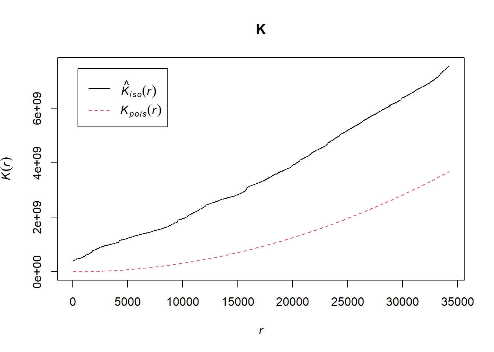
K is always larger than that of a poisson distributed pattern. This indicates clustered observations.
This is confirmed by the L function. The term . -r ~ r is necessary to set the line straight to zero.
Lastly, the G-function
For the G-Function, different estimators are displayed. The first three lines are different estimators of the G-Function and are generally in agreement in this case. The last line (\(G_{pois}\)) is the G-Function of a poisson point process. As with the K and the L function before, that fact that the estimates for our data are higher than that for the poisson processes point to the fact, that our data are clustered. :::: {.blackbox data-latex=““} ::: {.center data-latex=”“} Exercise ::: Use K, L, and G to determine whether the trees in bei are aggregated or dispersed. ::::
3.3.3 Morans I
Lastly, we will have a look at Moran’s I a function for that looks for spatial autocorrelation.
This will be different from the other function we covered in this tutorial so far, because it requires a different package spdep (Bivand, Pebesma, and Gómez-Rubio 2013) and we will need a mark.
Thus we need to go back to the bird data and keep the individualCount variable.
## Lade nötiges Paket: spData## To access larger datasets in this package, install the spDataLarge package with: `install.packages('spDataLarge', repos='https://nowosad.github.io/drat/',
## type='source')`# - We dont need to specify the geometry column in the call
# - to select because it is sticky.
birds3 <-
birds |>
filter(!is.na(decimalLatitude) & !is.na(individualCount)) |>
st_as_sf(coords = c("decimalLongitude", "decimalLatitude"), crs = 4326) |>
st_filter(filter(gadm, NAME_1 == "Rheinland-Pfalz")) |>
dplyr::select(count = individualCount)
# - Add x and y coordinates as individual variables.
birds3 %<>%
mutate(x.coord = st_coordinates(birds3)[,1],
y.coord = st_coordinates(birds3)[,2])
# - Turn birds3 into a data table so we can use the unique() function.
setDT(birds3)
birds3 %<>% unique(by = c("x.coord", "y.coord")) %>%
st_as_sf() %>%
st_drop_geometry()After preparing the bird data, we need to create a neighborhood list for our data.
This works in three steps:
1. identify the nearest (or k\(^{th}\)) neighbor with knearneigh().
2. Turn knn object created by knearneigh() into a neighbors list of class nb with knn2nb().
3. Add spatial weights nb with nb2listw().
For our case, spatial weights simply reinforce the neighborhood scheme. So only the nearest neighbor is weighted and all other observations have a weight of zero.
Then finally, we can use moran.test() to compute Moran’s I.
We provide the function with the variable of interest (the mark) and the weighted list of neighbor.
## Warning in knn2nb(knn): neighbour object has 304 sub-graphs##
## Moran I test under randomisation
##
## data: birds3$count
## weights: listw
##
## Moran I statistic standard deviate = 23.907, p-value < 2.2e-16
## alternative hypothesis: greater
## sample estimates:
## Moran I statistic Expectation Variance
## 0.978453524 -0.001047120 0.001678658From these results we can see that close points are more similar than would be expected by chance (p-value <0.05). Remember that a Moran’s I of 0 would indicate random dispersal, 1 perfect clustering, and -1 perfect dispersal.